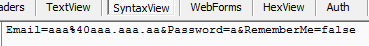
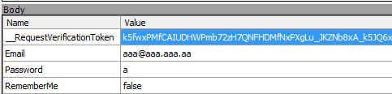

一、
一個典型的Request與Response應用就是「網路機器人」
System.Net 命名空間提供開發 windows form 應用於網路之工具，
System.Net 命名空間底下有 WebRequest 與 WebResponse 可以使用；
而 System.Web 命名空間提供開發 web form 應用於網路之工具。
System.Web 命名空間底下有 HttpRequest 與 HttpResponse 類別可以使用。
本文特別針對 System.Web 命名空間作說明。
WebRequest 與 WebResponse 皆為基礎的抽象類別，
還有更豐富的應用為 HttpWebRequest 與 HttpWebResponse 類別，
其兩者繼承了 WebRequest 與 WebResponse 類別。
1、列出部份 WebRequest 類別相關方法與屬性：
a、Method 屬性：通常其值為字串 GET 或 POST。
b、Create(String)、Create(Uri)、CreateHttp(String)、CreateHttp(Uri) 方法：
Create 與 CreateHttp 方法兩者差在一個為 Create WebRequest 執行個體，另外一個為Create HttpWebRequest執行個體。
c、GetRequestStream 方法：在子代類別中覆寫時，傳回 Stream，以便將資料寫入至網際網路資源。
d、GetResponse 方法：在子代類別中覆寫時，傳回對網際網路要求的回應。
2、列出部份 WebResponse 相關方法與屬性：
a、ContentLength 屬性：在子代類別中覆寫時，取得或設定正在接收資料的內容長度。
b、ContentType 屬性：在衍生類別中覆寫時，取得或設定正在接收資料的內容類型。
c、Headers 屬性：在衍生類別中覆寫時，取得與這個要求相關聯的標頭名稱值配對集合。
d、ResponseUri 屬性：取得Uri
e、GetResponseStream 方法：在子代類別中覆寫時，傳回來自網際網路資源的資料流。
二、範例
以下為 Httprequest 與 HttpResponse 技術的 C# 語法範例
using System;
using System.IO;
using System.Net;
namespace ConsoleApplication1
{
class Program
{
static void Main(string[] args)
{
string myUri = "http://www.dotblogs.com.tw/brooke/Default.aspx";
HttpWebRequest webreq = HttpWebRequest.CreateHttp(myUri);
//2.WebResponse不能隱含轉成HttpWebResponse
WebResponse resp = webreq.GetResponse();
//取出該網頁文字檔
StreamReader sr = new StreamReader(resp.GetResponseStream(),Encoding.UTF8);
String s2 = sr.ReadToEnd();
sr.Close();
Console.WriteLine(s2);
Console.ReadLine();
}
}
}
說明：
一開始Request一般都會先藉由Create(uri)來初始化一個Request，
然後再使用Response去接Request回來的Response(回應)，
最後再對已接收到Response的Response物件做處理，例如取得網頁原始碼。
以下為 httprequest 與 HttpResponse 技術的 VB.NET 語法範例
Imports System.IO Imports System.Net Public Class Form1 Private Sub Button1_Click(sender As Object, e As EventArgs) Handles Button1.Click '1.webreq = WebRequest.CreateHttp("http://www.yahoo.com.tw") 效果一樣? Dim webreq As HttpWebRequest = HttpWebRequest.Create("http://www.yahoo.com.tw") '2.HttpWebRequest繼承自WebRequest Dim resp As HttpWebResponse = webreq.GetResponse '取出該網頁文字檔 Dim sr As StreamReader = New StreamReader(resp.GetResponseStream) TextBox1.Text = sr.ReadToEnd sr.Close() '將html倒給webBrowser WebBrowser1.DocumentText = TextBox1.Text 'WebBrowser1.Navigate("http://www.yahoo.com.tw") 使用WebBrowser1.Navigate所顯示的內容比WebBrowser1.DocumentText = TextBox1.Text還正確 End Sub End Class
三、實作簡單的POST方法
我們藉由一個MVC會員登入範例來實作簡單的POST方法
http://localhost:55715/
http://localhost:55715/Account/Login
為了focus在核心項目我把AntiForgeryToken拿掉了，減化複雜度。
我們從Fiddler來觀察，
Header
TextView
SyntaxView

WebForms
由此可知我們要POST的項目有三項分別是Email、Password、RememberMe
注意POST到server端的字串要經過UrlEnode編碼才行傳送，如上圖SyntaxView
一個使用 POST 方法到 server 的程式框架如下
using System;
using System.Net;
using System.Text;
using System.Web;
namespace ConsoleApplication1
{
class Program
{
static void Main(string[] args)
{
string Email = "aaa@aaa.aaa.aa";
string Password = "a";
Boolean RememberMe = false;
Email = HttpUtility.UrlEncode(Email);
Password = HttpUtility.UrlEncode(Password);
string formatString = "Email={0}&Password={1}&RememberMe={2}";
string postString = string.Format(formatString, Email, Password, RememberMe);
byte[] postData = Encoding.UTF8.GetBytes(postString);
string myUri = "http://localhost:56306/Home/About";
HttpWebRequest request = WebRequest.Create(myUri) as HttpWebRequest;
request.Method = "POST";
request.KeepAlive = false;
request.ContentType = "application/x-www-form-urlencoded";
CookieContainer cookieContainer = new CookieContainer();
request.CookieContainer = cookieContainer;
request.ContentLength = postData.Length;
// 提交請求數據
System.IO.Stream outputStream = request.GetRequestStream();
outputStream.Write(postData, 0, postData.Length);
outputStream.Close();
// 接收返回的頁面
HttpWebResponse response = request.GetResponse() as HttpWebResponse;
System.IO.Stream responseStream = response.GetResponseStream();
System.IO.StreamReader reader = new System.IO.StreamReader(responseStream, Encoding.GetEncoding("utf-8"));
string srcString = reader.ReadToEnd();
Console.ReadLine();
}
}
}
另外我也試了一下，如果網站加上了AntiForgeryToken用來防止CSRF(Cross-Site Request Forgery)，
我在我的Console也因為網站使用了防CSRF技術，所以我POST参數再加上__RequestVerificationToken的值，

但很可惜的，server端回傳一個「遠端伺服器傳回一個錯誤: (500) 內部伺服器錯誤。」的錯誤訊息，
實驗結果，當網站使用了AntiForgeryToken之後，
就算你知道了__RequestVerificationToken的值並且也依樣畫葫蘆將值送到了server端，
server端也會把你檔下來。我個人認為AntiForgeryToken的技術會做類似checkSum動作，
算出來的結果有異就擋下來。
参考資料：
使用HttpWebRequest提交ASP.NET表单并保持Session和Cookie
ASP.NET MVC - ValidateAntiForgeryToken 與 自定 HandleError 處理顯示客製的錯誤訊息頁
如何使用 WebRequest,HttpWebRequest 來存取 (GET,POST,PUT,DELETE,PATCH) 網路資源
[C#/.net] 使用HttpWebRequest來Post資料